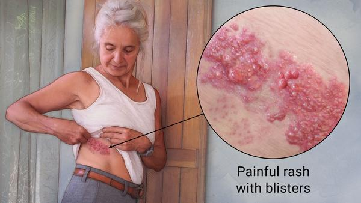

Shingles
Shingles is an infection caused by the varicella-zoster virus, which is the same virus that causes chickenpox.
This type of viral infection is characterized by a red skin rash that can cause pain and burning. Shingles usually
appears as a stripe of blisters on one side of the body, typically on the torso, neck, or face.
How Shingles Spreads?

- Varicella zoster virus (VZV) has a high level of infectivity and has a worldwide prevalence.
- As with chickenpox and other forms of herpes, direct contact with an active rash can spread VZV to a person who has no immunity to the virus.
- This newly infected individual may then develop chickenpox, but will not immediately develop shingles.
- Shingles is not spread through coughing or sneezing, but through direct contact with fluid from the blisters. Before the blisters develop and after the crusts form, the person is not contagious.
What are the symptoms of Shingles?
The symptoms of shingles include:
- Localized burning, throbbing or stabbing pain where the rash will soon appear (within days to weeks).
- Tingling, itching, or prickling skin, followed several days later by a group of fluid-filled blisters on a red, inflamed base of skin.
- The rash may be accompanied by fever, fatigue, or headache.
What are the precautions and treatments precautions for Shingles?
- Always wash your hands before eating and at all times.
- The main precaution for shingles is to avoid coming in contact with the shingles-affected patient, until the open sores heals.
- Self Care: Run a washcloth under cool water and place it on blisters for about 20 minutes at a time. Not only can this relieve itching, it also keeps your blisters clean. That helps you avoid a skin infection.
- A chickenpox vaccine in childhood or a shingles vaccine as an adult can minimise the risk of developing shingles.
- Treatments include pain relief and antiviral medication such as aciclovir or valaciclovir.